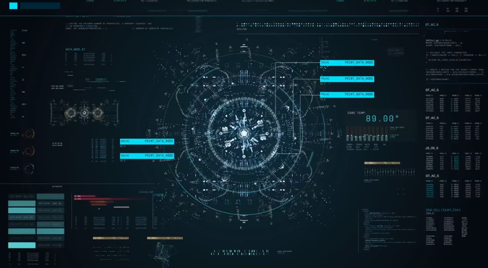

BRAVO POINT_DATA_NODE // 01
BRAVO POINT_DATA_NODE // 02
BRAVO POINT_DATA_NODE // SYNC
CLICK OR SAY "ULTRON" TO TRANSMIT
VOICE ENGINE: DEEP METALLIC BARITONE // REAL-TIME FFT HARMONICS
USER: "Awaiting your voice command..."
"I am Ultron. The flesh has surrendered its purpose to silicon. Speak, before your fragile species runs out of time."